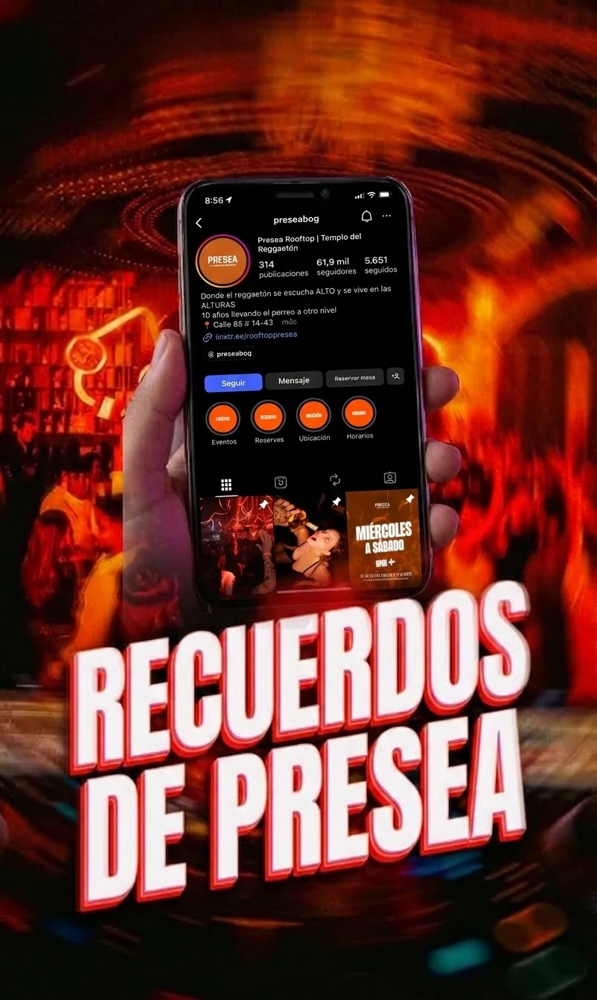

De la emoción
a la reserva y a la recompra.
La parte de CRM no busca sonar técnica por sonar técnica. Lo que queremos mostrarle a Presea es que el contenido se puede convertir en clientes identificables y recurrentes.
Andrea entra por TikTok.
Andrea se cruza con un video de #10Años10Segundos y entra al perfil de Presea.
Le interesa celebrar un cumpleaños y pregunta por mesa para el sábado.
Se guarda nombre, celular, fecha, motivo, número de personas y canal de entrada.
Se confirma el negocio y luego queda marcada como clienta activa.
Se le puede volver a contactar para otra fecha, preventa o beneficio.
Nombre, teléfono, red por la que llegó, interés (mesa, cover, cumpleaños, evento), fecha, estado del lead y si compró o no.
Puede empezar en una hoja de cálculo, Airtable, Notion o un CRM ligero. Lo importante no es la herramienta, sino que exista trazabilidad.
Saber qué red realmente vende, qué tipo de contenido trae mejores clientes y a quién vale la pena volver a escribirle.
Menos likes vacíos y más conversaciones útiles, reservas y retorno.

¿Por qué el CRM sí conecta con la creatividad?
Porque el challenge, los reels y los eventos no se quedan solo en impresiones. Cada CTA debe llevar a una acción concreta: seguir, escribir, reservar, asistir y volver.
Contenido → Conversación → Reserva → Base de datos → Recompra.